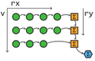

Publications
 |
Parallel Associative Reductions in Halide
Patricia Suriana, Andrew Adams, Shoaib Kamil
CGO 2017
|
|
Burst photography for high dynamic range and low-light imaging on mobile cameras
Samuel W Hasinoff, Dillon Sharlet, Ryan Geiss, Andrew Adams, Jonathan T Barron, Florian Kainz, Jiawen Chen, Marc Levoy
ACM SIGGRAPH Asia 2016
|
|
Bilateral guided upsampling
Jiawen Chen, Andrew Adams, Neil Wadhwa, Samuel W. Hasinoff
ACM SIGGRAPH Asia 2016
|
 |
Automatically scheduling halide image processing pipelines
Ravi Teja Mullapudi, Andrew Adams, Dillon Sharlet, Jonathan Ragan-Kelley, Kayvon Fatahalian
ACM SIGGRAPH 2016
|
 |
Fast Bilateral-Space Stereo for Synthetic Defocus
Jonathan T. Barron, Andrew Adams, YiChang Shih, Carlos Hernández
CVPR 2015 (Oral Presentation)
Supplemental Material
|
|
Sculpting by Numbers
Alec Rivers, Andrew Adams, Frédo Durand
ACM SIGGRAPH Asia 2012
|
|
Decoupling Algorithms from Schedules for Easy Optimization of Image Processing Pipelines
Jonathan Ragan-Kelley, Andrew Adams, Sylvain Paris, Marc Levoy,
Saman Amarasinghe, Frédo Durand
ACM SIGGRAPH 2012
Also see:
Halide: A Language and Compiler for Optimizing Parallelism,
Locality, and Recomputation in Image Processing Pipelines
Jonathan Ragan-Kelley, Connelly Barnes, Andrew Adams, Sylvain Paris, Frédo Durand, Saman Amarasinghe
PLDI 2013
|
|
The Frankencamera: An Experimental Platform for Computational Photography
Andrew Adams, Eino-Ville Talvala, Sung Hee Park, David E. Jacobs,
Boris Ajdin, Natasha Gelfand, Jennifer Dolson, Daniel Vaquero,
Jongmin Baek, Marius Tico, Hendrik P. A. Lensch, Wojciech Matusik,
Kari Pulli, Mark Horowitz, Marc Levoy
ACM SIGGRAPH 2010
Reprinted in CACM November 2012
Also see:
Multi-exposure Imaging on Mobile Devices
Natasha Gelfand, Andrew Adams, Sung Hee Park, Kari Pulli
ACM Multimedia 2010
|
 |
Fast High-Dimensional Filtering Using the Permutohedral Lattice
(See my dissertation for more detail)
Andrew Adams, Jongmin Baek, Abe Davis
Eurographics 2010
Runner-up for Best Paper
Also see:
Lattice-Based High-Dimensional Gaussian Filtering and the Permutohedral Lattice
Jongmin Baek, Andrew Adams, Jennifer Dolson
Journal of Mathematical Imaging and Vision 2012
|
|
Gaussian KD-Trees for
Fast High-Dimensional Filtering
(See my dissertation for more detail and algorithmic improvements)
Andrew Adams, Natasha Gelfand, Jennifer Dolson, Marc Levoy
ACM SIGGRAPH 2009
|
 |
Viewfinder Alignment
Andrew Adams, Natasha Gelfand, Kari Pulli
Eurographics 2008
|
 |
General Linear Cameras with Finite Aperture
Andrew Adams, Marc Levoy
EGSR 2007
|
 |
Veiling Glare in High Dynamic Range Imaging
Eino-Ville Talvala, Andrew Adams, Mark Horowitz, Marc Levoy
ACM SIGGRAPH 2007
|
|
Light Field Microscopy
Marc Levoy, Ren Ng, Andrew Adams, Matthew Footer, Mark Horowitz
ACM SIGGRAPH 2006
|
|
High Performance Imaging Using Large Camera Arrays
Bennett Wilburn, Neel Joshi, Vaibhav Vaish, Eino-Ville Talvala,
Emilio Antunez, Adam Barth, Andrew Adams, Mark Horowitz, Marc Levoy
ACM SIGGRAPH 2005
|
Code and Data
|
Halide
Writing fast image processing pipelines is hard, because you need to simultaneously optimize for parallelism and locality (memory bandwidth). This usually wrecks the modularity, portability, and readability of your code, because it involves fusing all your pipeline stages into one architecture-specific monolithic mess. Trying alternative optimizations is then very painful, because it requires rearranging huge chunks of code and then fixing the bugs you inevitably introduced.
Halide makes it easier to explore possible optimizations by separating the specification of the algorithm from the specification of the "schedule", which defines what gets computed when and where it is stored. Halide is described in this SIGGRAPH 2012 paper. The compiler is open source, and can be found here. We welcome contributions and bug reports.
|
 |
ImageStack
ImageStack is a command-line stack calculator for images that I have been slowly building up. It's a swiss-army knife for computational photography, with resampling, image arithmetic, alignment, gradient-domain operators, a wide variety of efficient linear and non-linear filters, wavelet transforms, Fourier transforms, deconvolution operators, and even some light field operators. Thanks to the help of the students in CS448f it also includes implementations of some recent SIGGRAPH papers. It's great in scripts, and you can also link to it as a library. Recently it has begun to include some metaprogramming tricks backported from Halide, so some routines are quite fast.
|
|
The FCam camera control API for the Nokia N900
We think you should be able to program your camera. This API turns your Nokia N900 into a programmable camera. It replaces key kernel drivers and disables the existing user-space daemons that mess with the sensor settings behind your back. This lets you easily program your N900 to take exactly the shots you want at the maximum possible frame rate. We've used this API with success teaching grad students computational photography, and it's the same API we use on the Frankencamera. The architecture behind this API is described in full in our SIGGRAPH 2010 paper.
|
 |
Fast High-Dimensional Bilateral Filtering
If you're looking for CPU or CUDA implementations of the Gaussian KD-Tree or the permutohedral lattice you can find them at their paper webpages here and here respectively. The CPU implementations have also been integrated into ImageStack, which you may find more convenient. My dissertation contains simple annotated versions of the code as appendices.
|
 |
The Stanford Light Field Archive
This is our collection of light fields acquired with camera array, gantry, and light field microscope. Feel free to use any of the light fields on this page in your research (with credit). Also includes my light field viewing applet. To capture your own similar light fields all you need is a camera and some lego.
|
|
Photography Applets
Nora Willett, Katie Dektar, Marc Levoy and I made a range of applets to help teach concepts in photography for the digital photography course CS178. They explore topics in optics, color, and image processing.
If you like those, you may also enjoy my Toy optical bench applet. Drag the components in the upper left into the middle to place them. Shift-drag objects to rotate and scale them. Alt-drag objects to change their aspect ratio (this is how you change the power of a lens).
|
|

{kind=link}